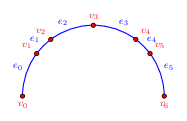

- Generated by
 1.17.0
1.17.0
|
CGAL 6.3 - 1D Arrangements
|
The package Arrangement_on_curve_1 is designed for constructing, manipulating, and querying one-dimensional arrangements embedded along continuous curves referred to as master curves. A 1D arrangement offers an efficient mechanism to maintain ordered sequences of points across diverse geometric tracking scenarios. Figure 36.1 shows a 1D arrangement embedded on the closed upper semicircle. It has seven vertices \(v_0,v_1,...,v_6\) and six edges \(e_0, e_1, ..., e_5\); see Arrangement_on_curve_1/arr_on_circle_segment.cpp.

Following standard CGAL architectural practices, this package strictly isolates the topological framework from the underlying geometry.
The core arrangement structure handles its geometry traits via a shared smart pointer (std::shared_ptr<const Geometry_traits_1>) to optimize lifecycle safety and reference tracking during intensive geometric operations. This allows sub-arrangements or output results to safely share identical geometric contexts with zero duplication overhead.
This manual walks through the structural elements of basic 1D subdivisions, methods for traversing topology pools, techniques for point location, procedures for overlay operations, the requirements for writing custom geometry traits, the mechanism for extending arrangement cells (i.e., vertices and edges), and the means of accessing cell properties (including extended data) via property maps.
The types and free functions referred to throughout this chapter are defined under the namespace CGAL::Arrangement_on_curve_1.
A 1D arrangement breaks a continuous track down into two alternating topological cells:
The primary interface is provided by the class template Arrangement_on_curve_1<GeometryTraits_1,TopologyTraits, BinarySearch>, which models the concept ArrangementOnCurve_1. It exposes safe APIs for query evaluations while delegating memory container allocations, incidence cell updates, and property map indexing to the backend topology traits model.
The arrangement concept requires boundaries tracking descriptors ArrangementOnCurve_1::unbounded_left_edge() (spanning from \(-\infty\)) and ArrangementOnCurve_1::unbounded_right_edge() (spanning to \(+\infty\)), anchoring the outer limits of the arrangement track. The actual member functions provided are in constant-time \(O(1)\).
Neighbor-to-neighbor structural traversals can be performed in either direction along the chain using incidence descriptor accessors like ArrangementOnCurve_1::left_edge(), ArrangementOnCurve_1::right_edge(), ArrangementOnCurve_1::left_vertex(), and ArrangementOnCurve_1::right_vertex().
The arrangement vertices and edges can be traversed using descriptor iterators. Callers can query all vertices or edges globally via ranges:
Arrangements can be dynamically built or modified using primitive update methods. When an arrangement is entirely empty, it consists of a single unbounded edge representing the whole open line. Inserting the very first point p into an arrangement object arr uses arr.insert_empty(p), which splits that single unbounded edge into a left-unbounded edge and a right-unbounded edge flanking the new vertex.
The arrangement class provides low-level topological construction modifiers to handle structured manual assembly:
Note that when the template parameter BinarySearch of Arrangement_on_curve_1<GeometryTraits_1,TopologyTraits, BinarySearch> is set to true
A vertex v can be removed from the arrangement using the call arr.remove(v).
Removing a vertex removes its point from the track and merges its left and right flanking edge back into a single unified edge, preserving the overall topological continuity of the curve.
Given a query point \(p\), the call locate(arr, q) locates the query point q in the given arrangement arr. The function returns a discriminated union container of type ArrangementOnCurve_1::Const_location_result (an instance of std::variant template) that identifies a cell (i.e., a vertex or an edge). In particular, the result is a Const_vertex_descriptor if the geometric embedding of the identified vertex coincides exactly with the query point \(q\), or otherwise an Const_Edge_desriptor, such that the geometric embedding of the identified edge contains \(q\) in its interior. The search is implemented via a linear topological walk from left to right starting at unbounded_left_edge(), using the geometry traits functor to locate the precise cell containing the query point parameter.
A similar function that return an object of type ArrangementOnCurve_1::Location_result that stores a not-const descriptor is also supported.
A high-level free to insert points into the arrangement is provided. The call arr.insert(arr, p) invokes the function. It first calls locate(arr, p) internally to find where the point p is located. If the point already matches an existing vertex, the descriptor of that vertex is returned. Otherwise, the function invokes ArrangementOnCurve_1::insert_empty(), ArrangementOnCurve_1::insert_before(), ArrangementOnCurve_1::insert_after(), or ArrangementOnCurve_1::split_edge() as needed to safely update the topology.
The call arr.overlay(arr_a, arr_b, arr_r) combines two input arrangements arr_a and arr_b aligned along the same continuous supporting curve into a single unified output arrangement arr_r (embedded in the same underlying curve). The algorithm performs a synchronized left-to-right sweep across both structures simultaneously.
An overloaded version accepts a forth argument, referred to as the visitor, is also supported. As intersections, point overlaps, or edge segment splits are discovered, the process notifies user-specified callback functions defined in the visitor object, which must be a model of the OverlayVisitor concept. These functions can then apply custom logic to automatically combine, translate, or synchronize user extended cells from the input arrangements into the resulting output cells.
A model of the geometry traits must satisfy the requirements of the AocTraits_1 concept. It defines the types for geometric points (Point_1) and provides a factory function producing a Compare_x_1 comparison functor. This functor must provide a strict linear ordering predicate, returning SMALLER, EQUAL, or LARGER when comparing two points along the curve direction.
The package provides four built-in geometry traits models covering different dimensional spaces:
Topological cells can be extended with custom user attributes using template parameters for vertex and edge data inside Unbounded_topology_traits<Point_1, VertexData, EdgeData>. When data types are provided, they are stored directly inside the respective records using an internal container wrapper that leverages the Empty Class Optimization (ECO) to ensure zero memory overhead if a field is set to void.
These attributes can be read or modified cleanly using standard Boost lvalue property maps accessed via ArrangementOnCurve_1::vertex_data_map() and ArrangementOnCurve_1::edge_data_map().